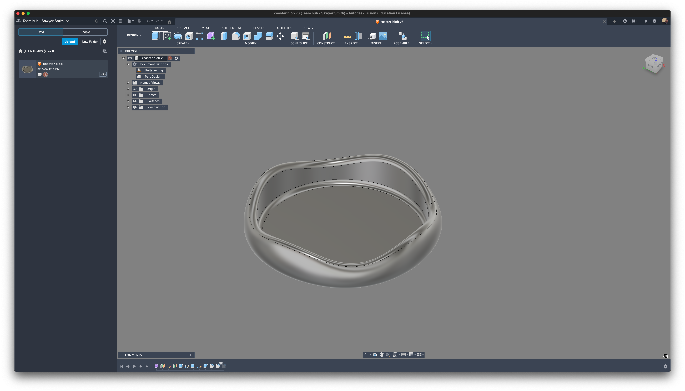

A simple coaster with an organic, blob-like shape modeled in Fusion 360's Sculpt environment using T-Spline tools.

Submission Questions
What is the function of the object you created?
The object is designed to sit under a drink and protect the table from water rings or condensation. It works as a coaster while also adding a more organic, custom look than a standard one.
What was the most challenging part of working with T-Splines?
The most challenging part of working with T-Splines was the lack of an edit history in the Sculpt environment, since each change feels permanent and harder to revise. I also found the sculpting tools less intuitive than other parts of Fusion 360, especially because common actions like right-clicking in the history do not behave the same way.
What would you change if you had more time?
If I had more time, I would create a small collection of organic coaster variations instead of just a single design. I would also design a simple holder so the coasters could be stored together as a complete set.
This is a private blog for course notes and reflections. Content is not indexed or publicly listed.